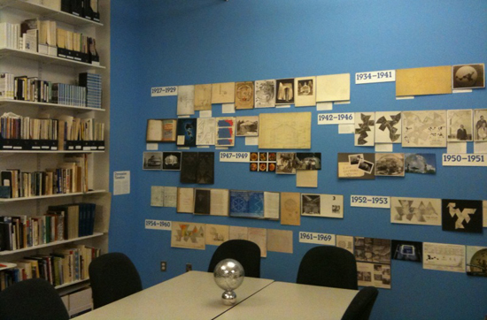
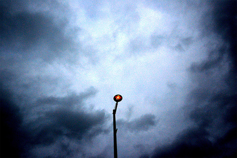
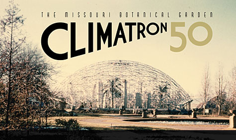
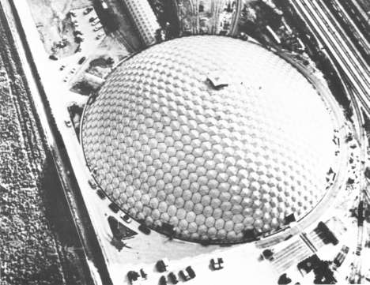

Vol. 11 No. 2
Semi-Finalists Announced in 2010 Buckminster Fuller Challenge!
The Buckminster Fuller Institute is proud to announce that thirty outstanding entries to the Buckminster Fuller Challenge have been advanced to the final stage of review.
The distinguished jury will select a winner who will be presented with the OmniOculi sculpture and the $100,000 prize money to honor and encourage further development of their work at a public ceremony in Washington DC, on June 5, 2010.
The thirty proposals currently under consideration have undergone a rigorous review for adherence to the entry criteria including an interview with the individual or team behind the strategy. The 30 semi-finalists were advanced from a pool of 215 entries submitted. The jury will spend the next two months reviewing the entries and determining finalists.
“We are very proud and excited about the 30 semi-finalists. They include an amazing array of comprehensive strategies that address some of our most pressing problems - from reversing desertification to prototyping strategies for disaster response, re-envisioning our cities as carbon sinks, to dealing with the trash patch the size of Texas floating in the middle of the Pacific gyre." reports Program Manager, JenJoy Roybal.
Click here for the titles and project leads of the 30 semi-finalist entries.
Thanks to all that attended the Opening of the BFI Study Center
Thanks to the dozens from the NYC area helped us celebrate the opening of the BFI Study Center on February 3rd.
The Study Center is now officially open to the public Monday-Thursday 1:00 - 4:00 p.m. or by appointment. For more information or to schedule an appointment please email or call us at 718-290-9280.
Featured Store Item: Earth Ball
Orbis Company's 16" inflatable Earth Ball allows you to hold Spaceship Earth in the plam of your hand! Featuring NASA satellite imagery, Night Glow cities (glow-in-the-dark points of light that represent the world's populated areas), and a 16-page Global Handbook with facts and games, the Earth Ball is perfect for children, teens, and adults alike. Experience the Earth in a whole new way with this unique toy.
On sale now for $14.95 in our online store!
Trends & Perspectives
British Streetlights to go on Dimmer Switch for Energy Efficiency
In a first for Britain, Coventry - a city in West Midlands - is spending £250 million over the next 25 years to convert all 28,000 of its street lights to work on city-wide dimmer switches. Each of the lights will be connected to a central control room that allows computers to turn lights up or down. The more dangerous or busy areas of the city can have lights turned to full brightness, or dimmed down during quiet hours. The sum effect is expected to save money, greenhouse gas emissions, and cut down on unnecessary light pollution. But it isn't without some controversy among city residents.
The Telegraph reports, "Coventry City Council hope to cut their carbon emissions by 40 per cent and reduce energy bills. But residents are already concerned that when lamps on suburban streets are turned down, the elderly and families could be put at risk. Others warn that turning up lights will leave them unable to sleep at night. Continue on Treehugger.
Related:
Lunar Resonant Streetlights from the Idea Index.
Environmental Group Applauds HP’s E-Waste Export Policy
Image from CP on Flickr
Hewlett Packard has announced a new policy that prohibits the export of toxic electronic waste from developed countries to any developing country, according to a press release issued by the Electronics Takeback Coalition.
The San Francisco-based Electronics TakeBack Coalition, which promotes responsible recycling and green design in the electronics industry, has released a statement applauding HP’s e-waste policy as a high standard in the industry.
“This announcement shows that HP is an environmental leader in this industry,” says Barbara Kyle, national coordinator for the ETC. “Companies managing e-waste need strict programs in place to prevent pushing our problems on developing nations and to stem the stream of toxic waste. With this policy, HP is making a commitment to do their part to stop the global dumping of e-waste.” Continue Here.
Related:
Best Buy's E-waste Recycling Program
Resources
Spherical Sculptures of Nick Sayers

GreenMap Mobile Launch
Joining the mobile revolution this week, Green Map System is pleased to announce two new sustainable living resources for people on the move:
• a mobile website designed for all internet-enabled cell phones
• the first Green Map iPhone App!
Ideal for locals and tourists alike, both feature the beta version of "What's Green Nearby?™" a handy tool for connecting with green resources on the go. Drawing from over 8800 sites contributed to the interactive Open Green Map sustainability mapping platform by local Green Map teams, this beta version delights users as it guides them to farmers markets, green buildings, gardens and heritage sites that help everyone make greener, healthier, low-impact choices.
Version 1.0 of the Green Map iPhone App includes 10 additional sections, delivering an insightful view into the impacts of this global movement through its Green Maps, videos, photos, Twitter, blog and much more.
Find out more here.
New book celebrates 50 years of the Missouri Botanical Garden’s Climatron
A new book by Washington University in St. Louis professor of architecture Eric Mumford, "The Missouri Botanical Garden Climatron: A Celebration of 50 Years," chronicles the history and significance of the St. Louis landmark, which in 1976 was named one of the most important buildings in American architectural history by the American Institute of Architects.
Since its creation in 1960, the Missouri Botanical Garden’s Climatron has welcomed tourists and generations of St. Louisans to the wonders of botany. Although originally intended as a plant research center, the R. Buckminster Fuller-inspired geodesic dome quickly became a favorite destination, enabling visitors to get up close and personal with rare tropical plants in a simulated rainforest environment. And the crowds have never stopped coming.
Find out more here.
Events
DC Environmental Film Festival
A Necessary Ruin: The Story of Buckminster Fuller and the Union Tank Car Dome
March 22nd, 6 p.m.
National Building Museum, Washington D.C.
When it was completed in October 1958, the Union Tank Car Dome, ostensibly designed by the visionary Buckminster Fuller, was the largest clear-span structure in the world. A Necessary Ruin relates the compelling narrative of the dome’s history. A discussion with BFI Board Member Jonathan Marvel and filmmaker/landscape architect Evan Mather, ASLA, follows the film. Presented as part of the DC Environmental Film Festival.
For more information click here.
BFI on Facebook
BFI on Twitter
To unsubscribe from this newsletter, send email to this address.
To never receive email from The Buckminster Fuller Institute, send email to this address.
This email is sent from:
The Buckminster Fuller Institute
{domain.address}